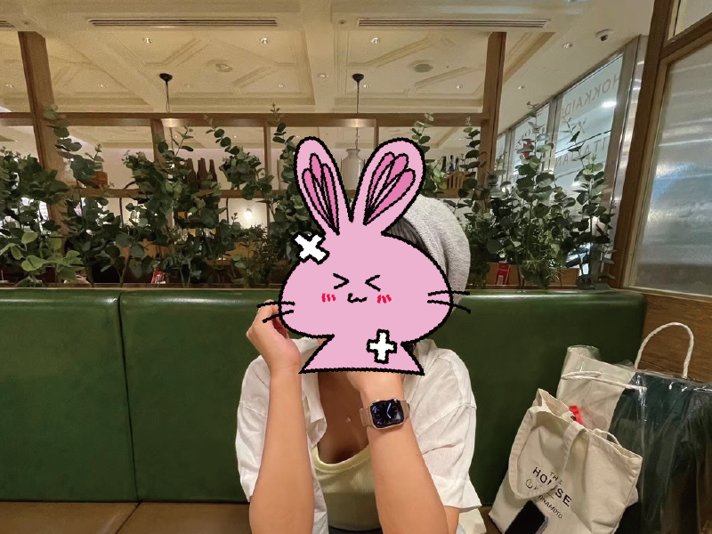

2025年 10月現在

現在は抗がん剤、放射線治療を終え、数ヶ月に一回のMRIで様子を見ています。今のところ、ガンの転移や再発は見られません。バセドウ病はほんの少しずつですが、良くなっています。
飲酒と運転以外は制限がなく、薬のせいで白血球が少なめなので感染症に警戒しながら過ごしています。夏もマスクは必須です。冬は本当に怖いです。
私は右利きなので、主に左側の脳を使って生活しています（だそうです）。腫瘍はあまり使っていないらしい右側の脳に出来たので、ラッキーでした。性格が変わる事も体に麻痺が残る事もなく、主治医をはじめたくさんのお医者様、看護師さんには頭が上がりません。
繋いでもらった命を懸命に生き抜こうと思います。頑張ります！